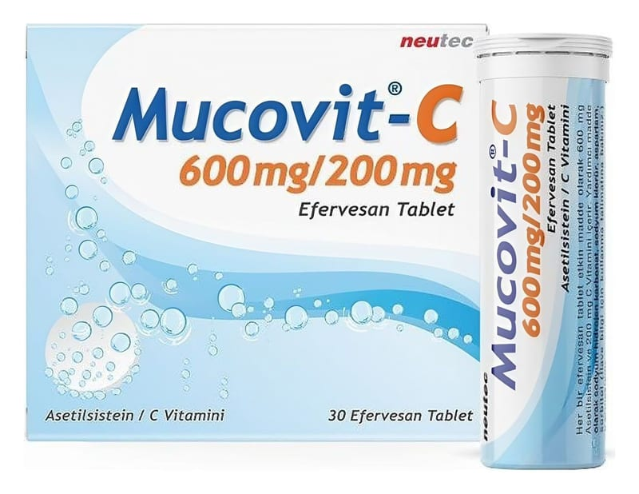

Mucovit-C 600/200 mg Efervesan Tablet, 30 Adet

Ne için kullanılır
KT · Bölüm 1 MUCOVİT–C, beyaz, yuvarlak efervesan tabletlerdir. 10, 20 ve 30 efervesan tabletler, silikajelli kapak ile kapatılmış plastik tüpler içerisinde ve karton kutuda kullanma talimatı ile beraber ambalajlanır. MUCOVİT–C suda tamamen eritildikten sonra içilerek kullanılan bir ilaçtır. MUCOVİT–C etkin madde olarak asetilsistein ve askorbik asit içerir. Asetilsistein, bir amino asit olan sistein türevi bir ajandır. Balgam söktürücü etkiye sahiptir. C vitamini (Askorbik asit); insan vücudunda sentezlenmediği için, besinlerle düzenli olarak alınması gereken bir vitamindir. MUCOVİT–C yoğun kıvamlı balgamın atılması, azaltılması, yoğunluğunun düzenlenmesi ekspektorasyonun (balgamın atılabilmesi) kolaylaştırılması gereken bronkopulmoner (bronş ve akciğer) hastalıklarda, bronşiyal sekresyon (solunum yolu salgısı) bozukluklarının tedavisinde kullanılan mukolitik (balgamı, mukusu parçalayan) bir ilaçtır.